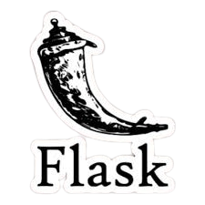
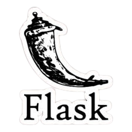
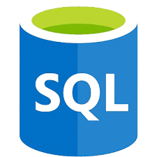
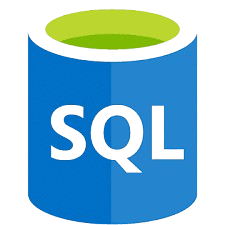
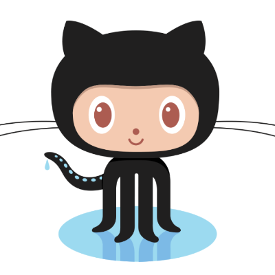
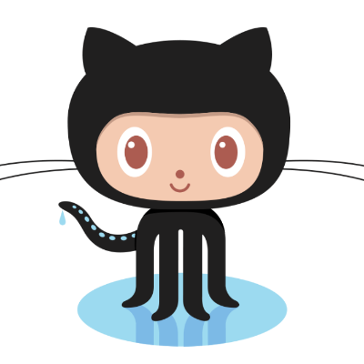

Formação Acadêmica
FATEC-SJC - Desenvolvimento de Software Multiplataforma, 2024 - até o momento.
Universidade Federal de Mato Grosso - Bacharelado em Música (Habilitação em Regência), 2015 a 2021.

Sou estudante de Desenvolvimento de Software Multiplataforma na Fatec São José dos Campos, com interesse em análise de dados e estatística. Meu perfil INTJ-T reflete uma abordagem lógica e estruturada para resolver problemas, desde o levantamento de hipóteses até a busca por soluções práticas. Estou me aprofundando em Python e modelagem de bancos de dados, ferramentas que me permitem trabalhar com grandes volumes de informações e aplicar conceitos estatísticos para gerar insights valiosos. Procuro oportunidades onde possa unir habilidades técnicas e pensamento analítico para criar soluções que façam a diferença.
FATEC-SJC - Desenvolvimento de Software Multiplataforma, 2024 - até o momento.
Universidade Federal de Mato Grosso - Bacharelado em Música (Habilitação em Regência), 2015 a 2021.
O projeto teve como objetivo o desenvolvimento de uma plataforma web para o acompanhamento do desempenho dos vereadores em exercício na cidade de São José dos Campos. A plataforma permite visualizações gráficas comparativas e possibilita que os cidadãos interajam, deixando comentários e feedbacks sobre o desempenho dos representantes públicos.


 

 



 


app.py até a definição das rotas e filtros para todas as telas da aplicação. Estruturei o modelo HTML inicial com Flask, que serviu como padrão para os demais desenvolvedores, estabelecendo uma base uniforme e organizada. Além disso, realizei um estudo aprofundado sobre a manipulação de arquivos JSON e compartilhei esse conhecimento com o grupo, proporcionando uma base sólida para que todos pudessem trabalhar de maneira eficiente com esse formato de dados.